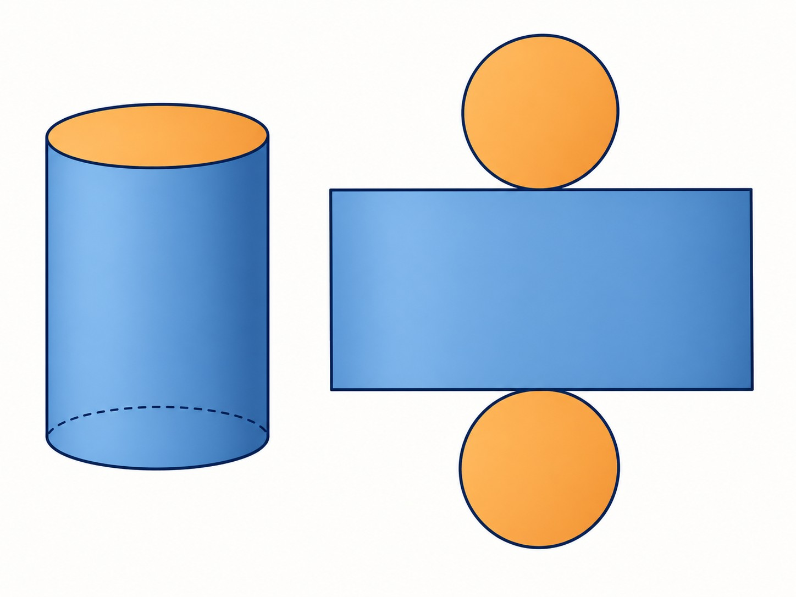
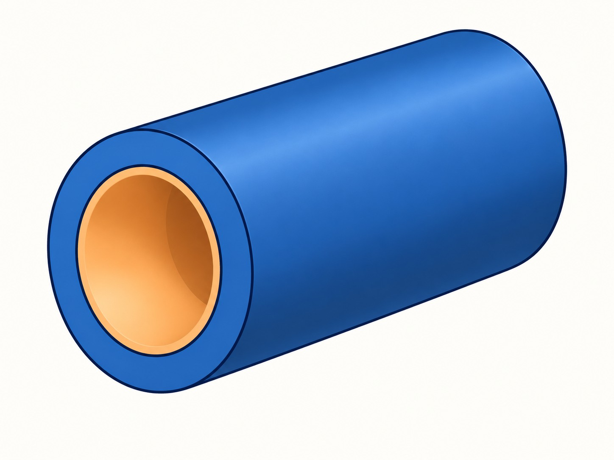

Wednesday, October 21, 2026 · 30-minute solids lesson after the 15-minute DMS-only Quiz 8
30 minutes · Offline capable
Today’s sequence
1
Quiz 8 · 15 minutes · decimal degrees → DMS only
2
Lesson · distinguish capacity from exposed surface
3
Model and practice closed-cylinder volume and total surface area
4
Extend to material volume in a hollow cylinder
Activate · 0 minSource: Authored
Capacity or covering?
Predict first
A sealed can holds a drink and is painted over every outside surface, including both circular ends. Which measurement describes the drink it can hold? Which describes the paint needed?
Commit to a response before discussion.
Activate · 3 minSource: Authored
Cylinder volume and surface-area formulas
Formula focus
Base area and circumference: $A_{\mathrm{base}}=\pi r^2$, $C=2\pi r$.
Volume (capacity): $V=A_{\mathrm{base}}h=\pi r^2h$. Units are cubic.
Lateral area (curved side): $LA=Ch=2\pi rh$.
Closed total surface: $SA=2A_{\mathrm{base}}+LA$ (two bases plus curved side).
Expanded form: $SA=2\pi r^2+2\pi rh$. Units are square.

Two circular ends plus one curved side make the closed-cylinder surface.
Explain · 4 minSource: Authored
Model: diameter given, radius required
A closed cylinder has diameter $d=10$ cm and height $h=8$ cm. Find exact and approximate volume and total surface area.
The given measure is the diameter, so $r=d/2=10/2=5$ cm.
The top line spans the full diameter; the side line marks height.
Model · 5 minSource: Authored
Pacing checkpoint
You try: closed-cylinder volume and area
Student practice
A closed cylinder has radius $r=3$ cm and height $h=10$ cm. Find exact and approximate volume and total surface area. Show the two surface-area contributions.
Subtract the inner circle's area, not the radii; volume uses cubic units.

The blue ring is material; the orange opening is the inner volume removed.
Model · 4 minSource: Authored
Exit check: what is being measured?
A closed cylinder has $r=3$ cm and $h=7$ cm. One student labels its capacity $63\pi$ cm$^2$ and its total surface area $60\pi$ cm$^3$. Identify and correct the mix-up.
Exit response
Answer in complete mathematical sentences and identify one remaining question.
Feedback and solution
Capacity is volume: $63\pi$ cm$^3$. Total surface area is $60\pi$ cm$^2$. The student switched both the quantities and their units.
Keep the final five minutes flexible for completion, correction, or a second radius-versus-diameter check.